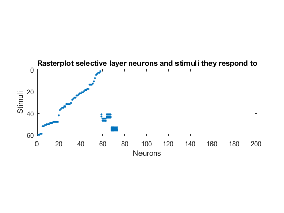
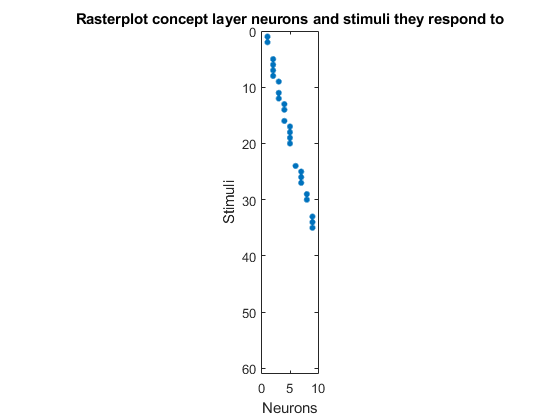

Script for testing complex pattern recognition: digits
Contents
Prepare enviroment
clear close all path(path,'MatFunc/Vision') path(path,'MatFunc/Simulate') path(path,'MatFunc/Accuracy') path(path,'MINST') readDigits = 36; extra = 400; n = extra + 9; % neuron dimension A = 9; % number of neurons in concept layer M = 200; % number of neurons in selective layer L = 60; mom = zeros(n,L); s = zeros(n,L); Figures = ["Triangle", "Square", "One", "Two", "Three"]; k = 1; for i = 1:5 aux = rand(extra,1)*100; for j = 1:4 Img = imread(strcat(Figures(i),int2str(j),'.jpeg')); [mom(1,k),mom(2,k),mom(3:9,k),mom(10:n,k)] = moments(Img,0,i-1); % mom(10:n,k) = aux; mom(1,k) = mom(1,k) * 100; % mom(2,k) = mom(2,k) / 100; % mom(3:9,k)= mom(3:9,k) / 100; mom(10:n,k) = mom(10:n,k) * 100; s(:,k) = abs(mom(:,k)) / norm(mom(:,k)); k = k+1; end end for k = 24:L mom(:,k) = rand(n,1); s(:,k) = abs(mom(:,k)) / norm(mom(:,k)); end psl = 0.95; % selective probability Th = sqrt(3)*0.5; % selective threshold pcn = 0.95; % concept probability Thcn = 0.5; % concept threshold alpha = 20; Tmax = 400; % max integration time f = @(t) mod(round(t),L)+1; % function defining the stimulus sequence K = 4; % associated stimuli. Must be a divisor of readDigits % function defining the consectutive signals sequence g = @(t) mod(round(t),L)+1-mod(round(t),K):mod(round(t),L)+1; delta = sqrt(1 - (2*norminv(psl) / sqrt(5*n))); b2 = (Th/delta)^2; % beta^2 bcn2 = (Thcn*sqrt(L)*delta*K*gamma(K + 0.5) / ... (Th*(1-pcn)*(1-delta)*factorial(K-1)*sqrt(M)))^2; % ??? W0 = 2*rand(n,M) - 1; % random neurons [~,id] = sort(sum(s'*W0 > Th)); % sort neurons for convenience W0 = W0(:,id);
Do simulations with Option C. Selective layer
h = 0.005; % time step (better to decrease) d = 150; % inhibitory coupling % Sensory layer W = SimulateNeurons4(Tmax, h, W0, s, f, alpha, b2, Th, d); figure; V = W'*s; F = V > Th; R = orderRasterPlot(F'); spy(R); title("Rasterplot selective layer neurons and stimuli they respond to"); xlabel("Neurons"); ylabel("Stimuli");
Do simulations. Concept layer
y = max(0,W'*s - Th); % compute reaction to s y = [y; y; y; y]; % y = y.*(y > epsilon); % avoid round to zero problems % Manually set the values U = zeros(M*4,A); Thcn = zeros(A,1); Thcn2 = zeros(A,1); for i=0:A-1 aux = sum(y(:,i*K+1:i*K+K),2); U(:,i+1) = aux/norm(aux); v = U(:,i+1)'*y(:,i*K+1:i*K+K); Thcn2(i+1) = min(v); Thcn(i+1) = min(v(v~=0)); end mom2 = zeros(n,5); s2 = zeros(n,5); Figures2 = ["Triangle5", "Square5", "One5", "Two5", "Three5"]; for i=1:5 Img = imread(strcat(Figures2(i),'.jpeg')); [mom2(1,i),mom2(2,i),mom2(3:9,i)] = moments(Img,0,i-1); mom2(10:n,i) = mom(10:n,(4*i)); s2(:,i) = abs(mom2(:,i)) / norm(mom2(:,i)); end V2 = W'*s2; y2 = max(0,V2 - Th); F3 = U'*[y2;y2;y2;y2] >= Thcn % figure() % for i=1:5 % subplot(4,10,i) % showPattern(p(:,:,i)); % end % sgtitle("Patterns used") %U0 = 2*rand(M,A) - 1; % random neurons %[~,id] = sort(sum(y'*U0 > Th)); % sort neurons for convenience %U0 = U0(:,id); %d = 0; %no inhibition % Concept layer %U = SimulateNeurons3(Tmax, h, U0, y, g, alpha, bcn2, Thcn, d); % Plot raster % figure; V = U'*y; F = V >= Thcn; F2 = V >= Thcn2; % R = orderRasterPlot(F'); figure spy(F'); title("Rasterplot concept layer neurons and stimuli they respond to"); xlabel("Neurons"); ylabel("Stimuli");
F3 = 9×5 logical array 0 0 0 0 0 0 0 0 0 0 0 0 1 0 0 0 0 0 1 0 0 0 0 0 1 0 0 0 0 0 0 0 0 0 0 0 0 0 0 0 0 0 0 0 0
Do simulations with Option D.
d = 150;
% Option D
W = SimulateNeurons4(Tmax, h, W0, s, f, alpha, b2, Th, d);
acD = accuracy(W,s,Th);